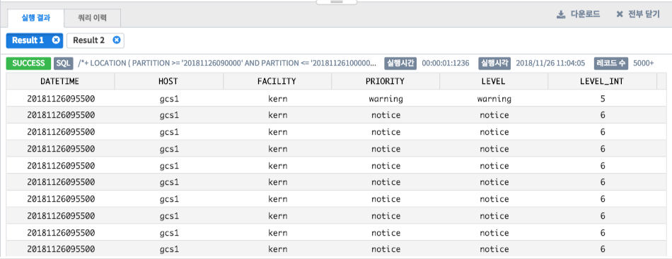
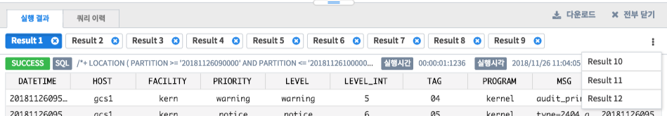

SQL 실행 결과¶
실행 결과¶
실행 결과 탭에서는 쿼리 실행 결과를 표 형태로 확인할 수 있습니다. 실행한 쿼리 개수만큼 결과 탭을 생성하여 각각의 쿼리 결과를 확인할 수 있습니다. 이러한 쿼리 결과를 CSV로 다운로드할 수도 있습니다.
번호 |
구분 |
설명 |
1 |
실행 결과 탭 |
실행한 쿼리 개수만큼 생성 |
2 |
모든 탭 닫기 |
모든 탭을 닫는 버튼 |
3 |
다운로드 |
활성화된 탭의 결과를 다운로드 할 수 있는 버튼 |
4 |
쿼리 실행 성공 여부 |
쿼리 실행 성공, 실패 여부 확인 |
5 |
실행한 쿼리 |
결과 데이터에 대한 쿼리 |
6 |
실행된 시간 |
쿼리가 실행된 총 시간 |
7 |
실행 시각 |
쿼리를 시작한 시간 |
8 |
데이터 개수 |
쿼리 실행한 결과에 대한 데이터 총 개수 |
9 |
결과 데이터 |
쿼리 실행한 결과에 대한 데이터 |
조회 이력¶
조회 이력 탭에서는 이전에 실행한 쿼리를 목록으로 확인할 수 있으며, 이 목록을 다운로드할 수도 있습니다.
